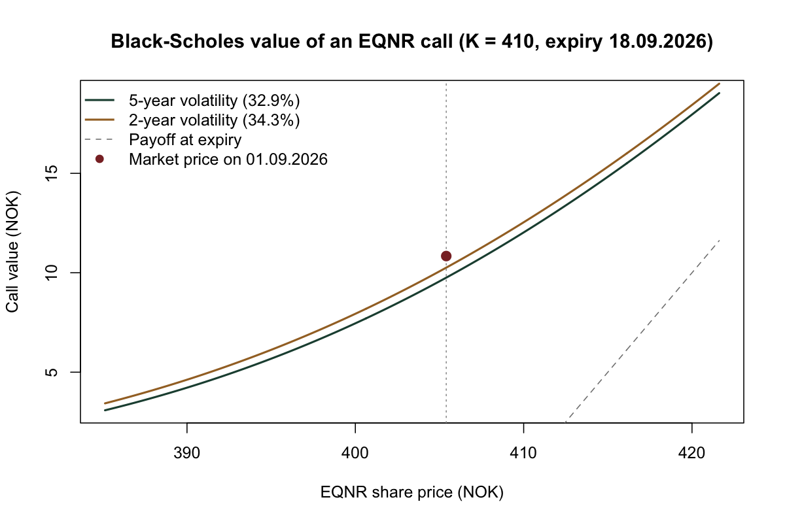
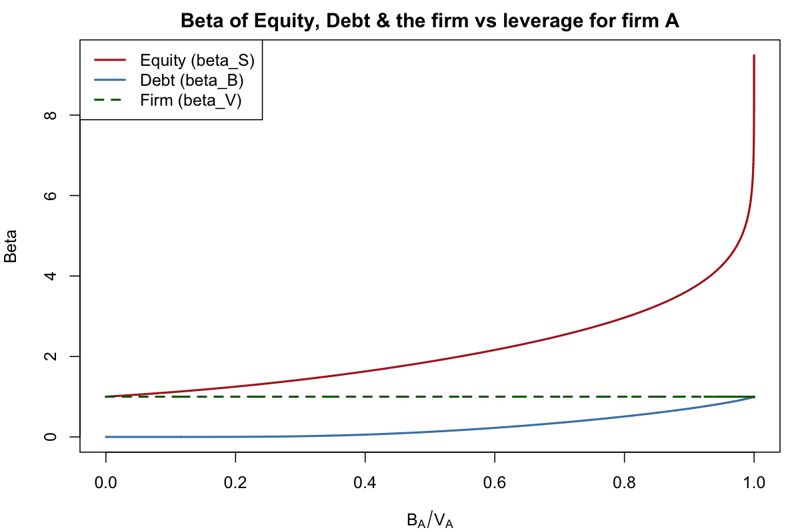

Code & Projects
Selected coursework and code — finance models built in R and Python.
Featured work

Pricing an Equinor call option with Black-Scholes
Historical volatility estimated from Yahoo Finance data feeds a Black-Scholes model of an EQNR call (strike 410, expiry 18.09.2026). The 2-year volatility window lands within 5% of the market price, against 10% for the 5-year window.

Equity and debt betas as leverage rises
Treating equity as a call option on firm value (the Merton model), equity beta climbs steeply as debt approaches firm value, debt beta rises from zero, and the firm's asset beta stays at 1.
Repositories
Public repositories on github.com/andreh0v, loaded live from the GitHub API. Click a repository to browse its files.